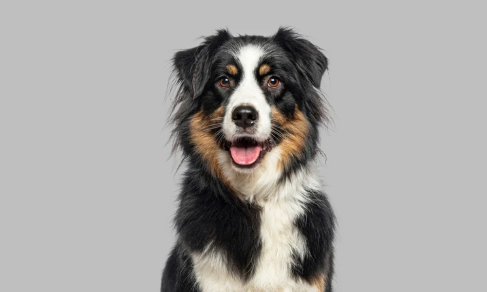

Welcome to Our Pet Adoption Center
Our Local Pet Adoption Service is dedicated to finding loving homes for abandoned and rescued animals. We work tirelessly to provide care, shelter, and medical attention to pets in need, ensuring they are healthy and ready for adoption.
Why Adopt a Pet?
Adopting a pet from a shelter is a rewarding experience that saves lives. When you adopt, you're not just getting a new companion—you're giving a second chance to an animal in need. Our adoption process is designed to match pets with families who can provide them with the love and care they deserve.
Our Services
- Pet adoption and matching services
- Veterinary care and health checks
- Spay and neuter programs
- Pet training and behavioral support
- Post-adoption follow-up and support
Pet Care Tips
Before adopting, it's important to understand the responsibilities of pet ownership. Pets require:
- Regular feeding and fresh water
- Daily exercise and playtime
- Veterinary visits and vaccinations
- Grooming and hygiene care
- Love, attention, and socialization
Featured Pets
Take a look at some of our wonderful pets looking for homes:
A friendly Golden Retriever mix, 2 years old, great with children and other pets.

A playful tabby cat, 1 year old, loves cuddles and is fully vaccinated.
Get Involved
We always need volunteers and donations to continue our mission. If you're interested in helping, please visit our Available Pets page or our Gallery to learn more about how you can contribute to our cause.